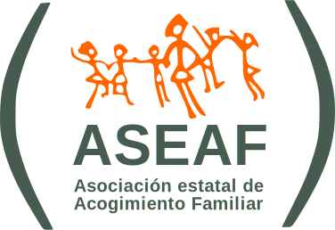
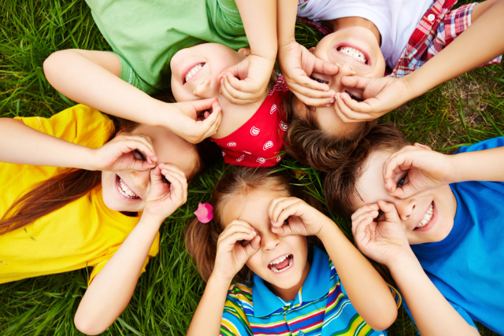
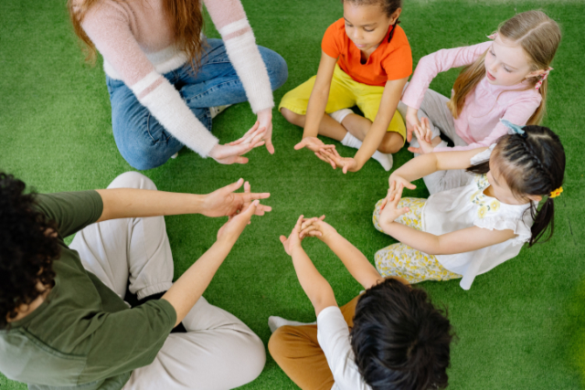

QUIÉNES SOMOS

- ASEAF nace en el año 2001 con la unión de asociaciones de familias acogedoras.
- En la actualidad agrupamos a 21 asociaciones y estamos presentes en 12 Comunidades Autónomas.
- Representamos a más de 1.500 familias acogedoras y trabajamos por los niñas bajo medida de protección.
- Queremos conseguir que el derecho de todos los niños, niñas y adolescentes a crecer en familia sea una realidad.


PROYECTOS
Llevamos a cabo nuestra actividad en torno a 4 ejes de actuación: